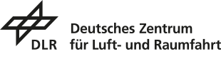

Abteilung 1
Automatisierte Faserablage
Robotergestützte Verfahren für tape-laying und fibre-placement bei großen Bauteilgeometrien.
Mehr erfahren ›
Am ZLP Augsburg entwickeln wir automatisierte Fertigungsverfahren für Faserverbundbauteile, mit denen sich Luft- und Raumfahrtstrukturen wirtschaftlich in hoher Qualität herstellen lassen.
Das DLR-Zentrum für Leichtbauproduktionstechnologie (ZLP) am Standort Augsburg ist eine Forschungs- und Entwicklungseinrichtung für die automatisierte Produktion von Faserverbundbauteilen. Im Mittelpunkt steht die Skalierung von Verfahren — von der Laborprobe bis zum Großbauteil — für Anwendungen in Luftfahrt, Raumfahrt und Mobilität.
Robotergestützte Verfahren für tape-laying und fibre-placement bei großen Bauteilgeometrien.
Mehr erfahren ›Inline-Sensorik und Closed-Loop-Regelung für reproduzierbare Bauteilqualität.
Mehr erfahren ›Datendurchgängigkeit von der Auslegung bis zur zerstörungsfreien Prüfung.
Mehr erfahren ›Tragflächenholm in 4,9 h Taktzeit gefertigt — Verschnitt unter 8 % bei voller Inline-QS.
Gemeinsames Projekt zur thermoplastischen Fertigung für Heckkomponenten startet im Q3 2026.
Die Prozesssimulations-Toolchain steht ab sofort unter Apache 2.0 in unserem Repository zur Verfügung.